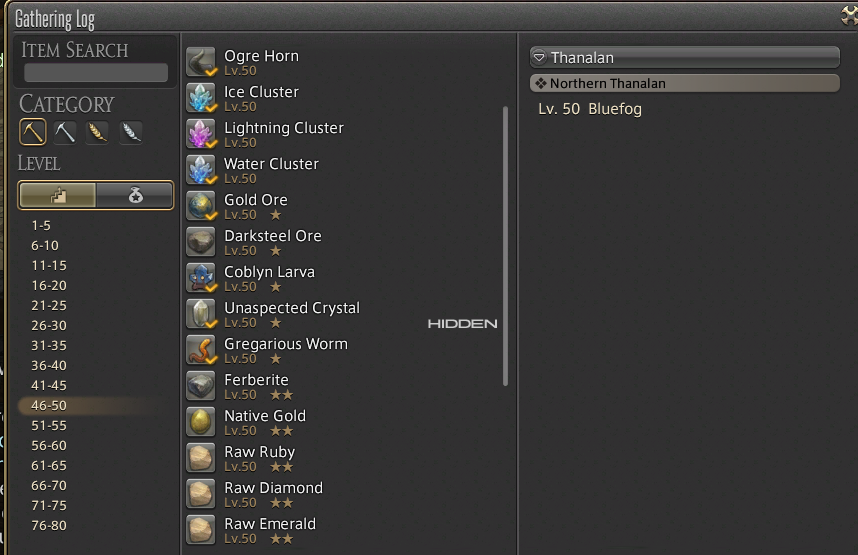

Suggestions
Before the guide, we highly suggest player to complete 'Litany of Peace',
the last 3.3 main scenario quest,
to unlock Ishgard restoration to make your process easier.
But you can still level up through the normal option to play your game.
Enjoy!

Normal Options
These normal option are the most basic method to leveling.
Most of the time you pick one or more of these method to reach 80lv.
Log Completion
The most simple and effective way to leveling your class is complete your gathering log.
First time completion will grant some bonus experience.

Job Quests
Complete your job quest will give you great amount of experience and unlock new skills.
But you can save it until you need extra experience to fulfuill some requienment.
Levemete
Levemete is another common way to leveling.
Each time you comlpete the quest can gain various rewards.
You can gain 3 allowances every 12 hours, and the max allowances is 100.
Notice that you cannot accept levemete without allowance.
Beast Tribes
Beast Tribe Quests are daily quests that require the players to perform tasks dictated by various Beast Tribes.
Only two beast tribes, Namazu and Qitari provide daily quest for Disciple of the Land.
You can complete maximum 3 quest every day to receive gathering experience.
Supply and Provisioning Mission
Your grand company's Personnel Officer will request specific items
based on your Disciple of the Hand and Disciple of the Land levels at the start of that day.
You can turn in one item (or group of items if so requested) per (unlocked) Disciple of the Hand and Disciple of the Land class per day.
If you turn in a High-Quality (HQ Icon.png) item, you will receive a higher reward,
which comes in the form of Company seals and experience points.
Custom deliveries
The Custom Deliveries are some content for Crafters and Gatherers.
They consist of players delivering weekly collectables required by NPCs in exchange for gil, crafters or gatherers' scrips, and experience for the equipped discipline.
Players can do up to a total of twelve deliveries per week, limited to up to six deliveries per client.

Level up in Ishgard
Ishgardian Restoration is the addition contents released after patch 5.21.
Upon unlocking Ishgardian Restoration, Disciples of the Hand or the Land of level 20 or above
can delivered materials or necessary supplies to exchange for Skybuilders' Scrips and experience points .
You can unlock the content in Foundation (X:9.7 Y:11.5) in Ishgard.